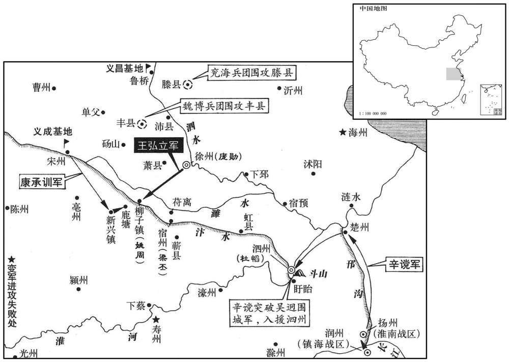
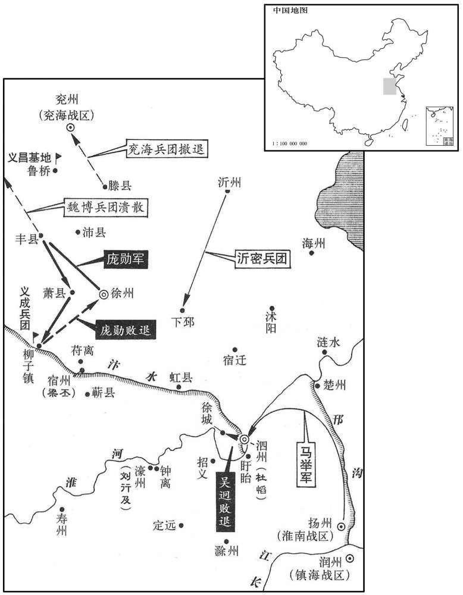
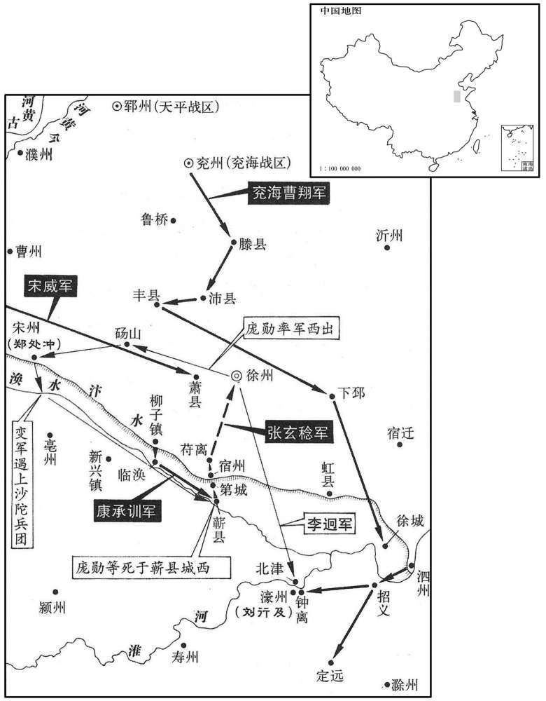
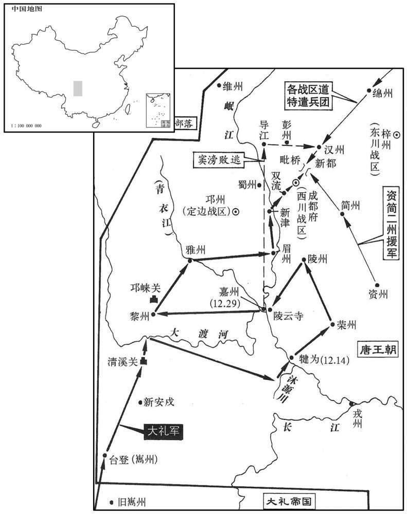

公元869年资治通鉴：本年记事、原文与白话对照
按原书编年位置阅读；追叙和史论不等于本年发生的事件。白话采用所据译本，缺译不以生成译文补齐。
卷251 · 本年记事
公元869年 · 唐懿宗昭圣恭惠孝皇帝咸通十年
十年〔（己丑，八六九）〕
本年事件索引（现代整理）
- 康承训率七万军围逼徐州
- 孟敬文谋叛被庞勋诱杀
- 同昌公主下嫁韦保衡，婚礼奢侈
- 徐州军攻海州遭伏击，另一路攻寿州亦败
- 辛谠率浙西援军突破淮上封锁入泗州
- 杨收长流驩州后赐死
- 裴坦毁坏裴氏婚娶杨女的盛大嫁妆
- 朱邪赤心以沙陀骑兵救康承训突围
- 王弘立恃胜袭鹿塘，遭沙陀军歼败
- 韦保衡任左谏议大夫兼翰林学士
- 郢王李侃徙封威王
- 康承训围剿姚周，攻破柳子寨
- 庞勋听闻姚周覆败，杀崔彦曾等并自称反叛
- 辛谠再运粮赴泗州，击退王弘芝水军
- 庞勋留父守徐州，率军进攻魏博
- 令狐绹任太保、分司东都
- 庞勋夜袭魏博军营，迫使各寨溃退
- 马举渡淮救泗州，击败围城叛军
- 庞勋进攻柳子失期，遭康承训伏击惨败
- 郑镒率下邳义军投降官军
- 陕州民逐崔荛，崔荛因应对旱情粗暴获罪
- 徐商出镇荆南，刘瞻拜相
- 马举克濠州外寨，围困濠州
- 曹翔整肃擅还沧卒，合军围讨徐州
- 康承训等连胜招降诸地，进逼宿州
- 庞勋命张玄稔等据守宿州，亲率军西攻
- 张玄稔杀张儒等献宿州降唐
- 张玄稔诈称宿州陷落，夺取苻离
- 张玄稔围攻徐州，斩庞举直、许佶，平定徐州
- 庞勋西逃遭官军追击，败死蕲县
- 张玄稔拜右骁卫大将军兼御史大夫
- 吴迥弃濠州突围，被马举追杀
- 康承训拜相镇河东，朱邪赤心受赐姓名李国昌
- 懿宗荒宴委政路岩，陈蟠叟因弹劾路岩获罪
- 李师望杀南诏使者激边衅，贪残失军心
- 南诏大举侵蜀，连陷犍为、嘉州等地
- 窦滂弃军逃走，南诏乘势陷黎、雅
- 唐命颜庆复率军援蜀

本年形势与背景参考图

本年形势与背景参考图

本年形势与背景参考图

本年形势与背景参考图
春，正月，康承训将诸道军七万余人屯柳子之西，自新兴至鹿塘三十里，壁垒相属。〔属，之欲翻。〕徐兵分戍四境，城中不及数千人，庞勋始惧。民多穴地匿其中，勋遣人搜掘为兵，日不过三二十人。
春季，正月，康承训率领诸道军队七万余人屯驻于柳子之西，从新兴到鹿塘三十里，官军筑造的堡垒前后相望。徐州军分别戍守于四境，徐州城的守军不超过几千人，庞勋这才感到恐惧。城中居民多挖地洞躲藏，庞勋派人去挖掘搜查，抓人当兵，每天不过抓得二三十人。
勋将孟敬文守风县，狡悍而多兵，谋贰于勋，自为符谶。勋闻之，会魏博攻丰，勋遣腹心将将三千助敬文守丰；敬文与之约共击魏博军，且誉其勇，〔「三千」之下，当有「人」字。将将，并即亮翻。誉，音余。〕使为前锋。新军既与魏博战，〔新军，谓庞勋新附之军。〕敬文引兵退走，新军尽没。勋乃遣使绐之曰：〔绐，徒亥翻。〕「王弘立已克淮南，留后欲自往镇之；悉召诸将，欲选一人可守徐州者。」敬文喜，即驰诣彭城。未至城数里，勋伏兵擒之，辛酉，杀之。
庞勋的部将孟敬文戍守丰县，为人狡猾而强悍，手下军队较多，于是孟敬文企图背叛庞勋，自己制造符谶。庞勋得知情况时，正值魏博藩镇的军队进攻丰县，庞勋于是派遣心腹将领率三千人援助孟敬文守丰县；孟敬文与援军将领相约共同袭击魏博军队，并且称赞援军将领勇猛，让他当先锋打头阵，新到的援军既与魏博军交战，孟敬文却率领军队退走，使新到援军尽遭歼灭。庞勋为此派使者哄骗孟敬文说：“王弘立已攻克淮南，留后想亲自去淮南镇抚；请诸位将领都来徐州商讨大计，希望能选一个可以镇守徐州的人。”孟敬文十分高兴，立即骑马赶往徐州。离徐州还几里路，庞勋预先埋伏好的士兵一跃而起，将孟敬文擒获，辛酉（初三），庞勋将孟敬文处死。
丁卯，同昌公主适右拾遗韦保衡，以保衡为起居郎、驸马都尉。〔同昌，隋郡名，唐为迭州常芬县。〕公主，郭淑妃之女，上特爱之，倾宫中珍玩以为资送，赐第于广化里窗户皆饰以杂宝，井栏、药臼、槽匮亦以金银为之编金缕以为箕筐，赐钱五百万缗，他物称是。〔称，尺证翻。〕
丁卯（九日），唐同昌公主嫁右拾遗韦保衡，唐懿宗任命韦保衡为起居郎、驸马都尉。同昌公主是郭淑妃生的女儿，唐懿宗特别喜爱，宫廷中的珍宝古玩几乎全部作为嫁妆，于长安广化里赐予宅第，连窗户都用珠宝修饰，院内的井栏，平时用的药臼、马槽柜子也用金银制造，用金丝编成筐箕，赐给钱五百万缗，其他财物不可胜数。
徐贼寇海州。〔徐贼者，庞勋所遣兵也。九域志：徐州东至海州四百八十里。〕时诸道兵戍海州者已数千人，断贼所过桥柱而弗殊，〔殊，绝也。断桥柱而不使绝，待贼过践踏而自陷。断，因短；下锁断、斧断同。〕仍伏兵要害以待之。贼过，桥崩，苍黄散乱，伏兵发，尽殪之。〔殪，壹计翻。〕其攻寿州者复为南道军所破，斩获数千人。〔南道军，淮、浙之兵也。复，扶又翻。〕
徐州叛贼侵寇海州。当时唐诸道军队在海州戍守的已有几千人，官军砍坏贼军必经桥梁的桥墩，而不使桥断绝，以等待贼军过桥时自陷，又在要害处埋下伏兵。贼军到来，桥崩塌下陷，士兵们仓皇溃散，官军伏兵齐发，将贼军全部歼灭。庞勋派往进攻寿州的贼车也被南方淮、浙诸道兵击败，被斩和被俘的有好几千人。
辛谠以浙西之军至楚州，敕使张存诚以舟助之。徐贼水陆布兵，锁断淮流，浙西军惮其强，不敢进，谠曰：「我请为前锋，胜则继之，败则汝走。」犹不可；谠乃募选军中敢死士数十人，牒补职名，先以米舟三艘、盐舟一艘乘风逆流直进，贼夹攻之，矢着舟板如急雨，〔夹攻者，两岸贼兵也。艘，苏遭翻。着，直略翻。〕及锁，谠帅众死战，斧断其锁，乃得过。城上人喧呼动地，〔帅，读曰率。呼，火故翻。〕杜慆及将佐皆泣迎之。乙酉，城上望见舟师张帆自东来，识其旗浙西军也；去城十余里，贼列火船拒之，帆止不进。慆令谠帅死士出迎之，乘战舰冲贼陈而过，〔陈，读曰阵。〕见张存诚帅米九艘，曰：「将士在道前却，存诚屡欲自杀，〔惮，敌而不敢进，故为之一前一却。〕仅得至此，今又不进。」谠扬言：「贼不多，甚易与耳。」〔所以作众气而使之进。易，以鼓翻。〕帅众扬旗鼓噪而前，〔帅，读曰率；下同。〕贼见其势猛锐，避之，遂得入城。
辛谠率领浙西军队赶到楚州，宦官敕使张存诚率领船队来协助。徐州叛贼在水上和陆上布置了军队，封锁截断了淮河水流，浙西军队畏惧贼军的强大，不敢前进，辛谠对张存诚及诸将领们说：“我请求当前锋，得胜你们就跟着我前进，失败你们就赶快撤退。”仍然得不到同意；辛谠于是招募军中的敢死士兵数十人，用牒写下每个人的职位姓名，先驾驶装米的船三艘，装盐的船一艘，乘风逆流而进，直冲泗州城，贼军在两岸夹击，箭头射在船板上，犹如急雨，船行至贼军封锁河道的铁锁前，辛谠率领部众奋力死战，用斧砍断铁锁，船得以通过，泗州城上欢呼之声震天动地，杜及部下将佐都哭着赶来迎接。乙酉（二十七日），泗州城上官军望见有战船张帆自东方而来，认出船上的旗帜是浙西军；离泗州城有十余里，徐州贼军排列火船进行阻挡，使浙西船队拉下船帆无法前进。杜命令辛谠率领敢死士兵出城迎接，辛谠乘战船冲向贼军阵地，冲过敌船后，看见张存诚率领装米的船九艘停在河中，张存诚喊：“将士们惧怕贼军不敢前进，在河道中停留，我几次要自杀，才将船开到这里，现在船又不敢前进。”辛谠扬言说：“贼军不多，前进并不太难。”于是率领众军扬起军旗，打鼓喧噪，奋力前进。贼军见浙西船队来势相当凶猛，避不敢迎战，于是船队得入泗州城。
二月，端州司马杨收长流驩州，寻赐死，其僚属党友坐长流岭表者十余人。
二月，唐懿宗将端州司马杨所长年流放于边远的州，不久又赐他自杀，杨收的僚属党羽受牵连长流南岭远外的有十余人。
初，尚书右丞裴坦子娶收女，资送甚盛，器用饰以犀玉；坦见之，怒曰：「破我家矣！」立命坏之。〔坏，音怪。〕已而收以竟以贿败。
起初，尚书右丞裴坦的儿子娶杨收的女儿，嫁妆极为丰盛，日常用具都用犀牛角和玉石来装饰；裴坦看见这些器物，愤怒地说：“这要使我家破人亡的呀！”立即命儿子毁掉这些奢侈品。后来杨收终于因为受贿而破败。
康承训使朱邪赤心将沙陀三千骑为前锋，陷陈却敌，〔陈，读曰阵。〕十镇之兵伏其骁勇。〔十镇，谓义成、魏博、鄜延、义武、凤翔、横海、泰宁、宣武、忠武、天平也。〕承训尝引麾下千人渡涣水，〔宿州临涣县，以临涣水得名。南北对境图：涣水出毫州，南流入淮，正直五河口。〕贼伏兵围之，赤心帅五百骑奋気冲围，拔出承训，贼势披靡，〔気，步瓜翻。披，普彼翻。〕因合击，败之。〔败，补迈翻。〕承训数与贼战，〔数，所角翻。〕贼军屡败。
康承训派遣朱邪赤心率领沙陀族骑兵三千人为前锋，冲锋陷阵击退徐州贼军，十藩镇的军队都佩服沙陀骑兵骁勇善战。康承训曾经率领麾下一千人渡涣水，遭贼军坦伏，被围困，朱邪赤心率领五百骑兵奋勇拼杀冲入重围，将康承训救出，贼军丧胆，官军乘机夹击，将贼军击败。康承训多次与贼军交战，贼军屡遭失败。
王弘立自矜淮口之捷，〔谓破戴可师也。〕请独将所部三万人破承训，庞勋许之。己亥，弘立引兵渡濉水，夜，袭鹿塘寨，黎明，围之。弘立与诸将临望，自谓功在漏刻。沙陀左右突围，出入如飞，贼纷扰移避，沙陀纵骑蹂之，〔蹂，人九翻。〕寨中诸军争出奋击，贼大败。官军蹙之于濉水，溺死者不可胜纪，〔胜，因升。〕自鹿塘至襄城，〔此襄城非汝州之襄城，盖徐、宿间别自有襄城也。〕伏尸五十里，斩首二万余级。弘立单骑走免，所驱掠平民皆散走山谷，不复还营，〔复，扶又翻。〕委弃资粮、器械山积。时有敕，诸军破贼，得农民，皆释之，自是贼每与官军遇，其驱掠之民先自溃。庞勋、许佶以弘立骄惰致败，欲斩之，周重为之说勋曰：〔为，于伪翻；下为敌同。说，式芮翻。〕「弘立再胜未赏，〔再胜，谓取濠州，破戴可师。〕一败而诛之，弃功录过，为敌报雠，诸将咸惧矣；不若赦之，责其后效。」勋乃释之。弘立收散卒纔数百人，请取泗州以补过，勋益其兵而遣之。
庞勋部将王弘立因淮口大捷破戴可师军，骄傲自负，请求独自率领所部三万人去进攻承训率领的的官军，得到庞勋的批准。已亥（十一日），王弘立率领军队渡过濉水，夜晚，袭击鹿塘寨的官军，至第二天黎明，将官军团团围住。王弘立与部下诸将登高远望，自以为马到成功，歼灭官军不在话下。沙陀骑兵左右突围，在贼军中出入如飞，使贼军队不成列，士兵纷纷躲避沙陀铁骑，沙陀骑兵纵马践踏贼军，鹿塘寨的诸道官军争相出营奋击，贼军大败。官军将王弘立部贼军逼到濉水，淹死的人不可胜数，从鹿塘到襄城，倒伏的尸体长达五十里，斩贼军首级二万余颗。王弘立骑着马只身逃出阵来，被他驱使的平民都逃散到山谷中，不再回营，抛弃的物资粮草，军用器械堆积如山，当时唐懿布宗颁诏敕，诸道官军击贼军时，凡俘获农民，全部释放免死，于是贼军每次与官军遭遇，贼军中被抓来驱使的农民就自动溃散。庞勋、许佶因为王弘立骄傲自大，麻痹大意而遭致惨败，想处以斩型，周重为此向庞勋说情：“王弘立多次打胜仗，没有给予奖赏，遭到一次失败，就要诛死，不记他的功而专录他的过，这等于为敌人报仇，使我部诸将都感到恐惧；不如赦免王弘立，让他带罪立功，将功补过，以观后效。”庞勋于是释放王弘立。王弘立收集散卒，才得数百人，请求攻取泗州以补罪过，庞勋给他补充军队后派他往泗州督战。
三月，辛未，以起居郎韦保衡为左谏议大夫，充翰林学士。
三月，辛未（十三日），唐懿宗任命起居郎韦保衡为左谏议大夫，充当翰林学士。
徙郢王侃为威王。〔侃，皇子也。〕
唐懿宗改封郢王李侃为威王。
康承训既破王弘立，进逼柳子，与姚周一月之间数十战。丁亥，周引兵渡水，〔谓渡涣水也。〕官军急击之，周退走，官军逐之，遂围柳子。会大风，四面纵火，贼弃寨走，沙陀以精骑邀之，屠杀殆尽，自柳子至芳城，〔芳城，新书作「芳亭」。〕死者相枕，〔枕，职任翻。〕斩其将刘丰。周将麾下数十人奔宿州，宿州守将梁丕素与之有隙，开城听入，执而展之。
康承训既已攻破王弘立，率军进逼柳子，与庞勋部将姚周在一个月之间交战数十次。丁亥（二十九日），姚周率领贼军渡过涣水，官军乘机急攻贼军，姚周率军退走，官军追逐，于是进围柳子，恰值大风起，官军趁势四面纵火，贼军抛弃营寨逃走，沙陀族以精锐骑兵于半路邀击，将贼军几乎屠杀干净，自柳子直到芳城，死尸一个接一个躺倒在地，姚周部将刘丰也被斩道。姚周率领麾下数十人投奔宿州，宿州的贼军守将梁丕平素与姚周有私仇，开城门让姚周进入，然后抓来斩首。
庞勋闻之大惧，与许佶议自将出战。〔将，即亮翻。〕周重泣言于勋曰：「柳子地要兵精，姚周勇敢有谋，今一旦覆没，危如累卵，不若遂建大号，悉兵四出，决力死战。」又劝杀崔彦曾以绝人望。术士曹君长亦言：「徐州山川不容两帅，〔帅，所类翻。〕今观察使尚在，故留后未兴。」贼党皆以为然。夏，四月，壬辰，勋杀彦曾及监军张道谨、宣慰使仇大夫，僚佐焦璐、温庭皓，并其亲属、宾客、仆妾皆死；断淮南监军郭厚本、都押衙李湘手足，〔断，丁管翻。〕以示康承训军。勋乃集众扬言曰：「勋始望国恩，〔大言以播告曰扬言。望国恩，谓望旌节也。〕庶全臣节；今日之事，前志已乖。自此，勋与诸君真反者也，当扫境内之兵，戮力同心，转败为功耳。」众皆称善。于是命城中男子悉集球场，仍分遣诸将比屋大索，〔比，毗必翻。〕敢匿一男子者族其家。选丁壮，得三万人，更造旗帜，〔更，工衡翻。帜，昌至翻。〕给以精兵。许佶等共推勋为天册将军、大会明王。勋辞王爵。
庞勋得知姚周军覆没，大为惊恐，与许佶商议亲自率领军队出战。周重哭着对庞勋说：“柳子地势险要，军队精良，姚周有勇有谋，今天一旦全军覆没，可知我们已到了极危险的境地，犹如蛋壳一碰就破，不如马上就建立国号，自立为王，率领全部军队四出攻击，与官军拼死决战。”周重又劝庞勋杀死崔彦曾，以断绝城里人对崔彦曾所抱有的一线希望。术士曹君长也说：“徐州的山川容不得两位统帅，今天观察使崔彦曾仍然在城中，所以留后您不得兴旺。”叛贼党羽都认为应该如此。夏季，四月，壬辰（初五），庞勋将崔彦曾及宦官监军张道谨、宣慰使仇大夫，崔彦曾的僚佐焦璐、温庭皓，以及他们的亲属、宾客、奴婢妻妾等全部处死；又将淮南宦官临军郭厚本、都押衙李湘的手足砍断，并出示给康承训率领的官军看。庞勋于是集合部众大声说：“庞勋起初希望得到国家的恩典，获得节度使的符节旌旗，或许可为唐朝保持臣节；今天的事已很清楚，我原先的希望已全部落空。从此以后，我与诸位是真造反了，这就应当收集徐州全境的军队，戮力同心去与官军拼斗，转败为胜，才是我们的活路。”众人都拍手称好。于是命令徐州城中的男子都集中于场，又分别派遣诸将挨家挨户地大肆搜索，敢藏匿一个男子的就灭其全家。于是选得丁壮三万人，重新制造旗帜，发给精锐的武器。许佶等人共同推戴庞勋为天册将军、大会明王。庞勋辞去王爵不肯接受。
先是，辛谠复自泗州引骁勇四百人迎粮于扬、润，〔先，悉荐翻。复，扶又翻。〕贼夹�之�之，转战百里，乃得出。至广陵，止于公馆，不敢归家，舟载盐米二万石，钱万三千缗，乙未，还至斗山。〔斗山，在今盱眙县，亦曰徒山，临淮流；斗山之东，则古盱眙。〕贼将王弘芝帅众万余，拒之于盱眙，密布战舰百五十艘以塞淮流，〔帅，读曰率。塞，悉则翻。〕又纵火船逆之。谠命以长叉托过，自卯战及未，众寡不敌，官军不利。贼缚木于战舰，〔舰，户黯翻。〕旁出四五尺为战棚，〔棚，蒲庚翻。〕谠命勇士乘小舟入其下，矢刃不所不能及，以枪揭火牛焚之，〔揭，其谒翻。火牛，缚草为之，爇以烧敌。今沿边州郡防城库积草，谓之火牛草。〕战舰既然，〔然，谓火燃也。〕贼皆溃走，官军乃得过入城。〔考异曰：续宝运录曰：「二月七日，辛谠拣点骁勇，领空船十二只般粮，二十日，却到楚州，四月六日，离楚，八日，至斗山下，是日二更后，入泗州。」按正月二十七日，谠迎米船九只入泗州，二月六日，未应食尽复出。又二十日却到楚州，不应住四十五日后离彼。又上有二月十日授谠御史，不应下云二月七日谠出般粮。疑是「三月」字也〕
此前，辛谠再次从泗州率领骁勇士兵四百人到扬州、润州迎粮，贼军在河岸夹击，辛谠转战一百里，才突围而出。来到广陵，住宿于官府旅馆，不敢回家，用船运载盐米二万石、钱一万三千缗回泗州，乙未（初八），来到斗山。贼军将领王弘芝率领一万余人，将辛谠阻挡于盱眙县，贼军在淮河密布战船一百五十艘，用以堵塞淮河水道，又放火船冲撞辛谠的船队。辛谠命令将士用长杈将火船拖走，自卯时战到未时，由于寡不敌众，官军处境极为不利。贼军在战船上绑上木头，出船侧四五尺作为战棚，辛谠派勇士划小船钻入贼船战棚下，船上的刀箭均打不到，用长茅绑上草，放火烧贼船。贼船即已燃烧，贼军都跳船逃走，辛谠于是得率船队进入泗州城。
庞勋以父举直为大司马，与许佶等留守徐州。或曰：「将军方耀兵威，不可以父子之亲，失上下之节。」乃令举直趋拜于庭，勋据桉而受之。时魏博屡围丰县，庞勋欲先击之，丙申，引兵发徐州。
庞勋委任父亲庞举直为大司马，与许佶等人留下来守徐州。有人对宠勋说：“将军您正向四方炫耀兵威，不可以因为父子之亲，而丧失上下臣节。”于是让宠举直在庭堂向庞勋跪拜谢恩，庞勋坐在椅子上接受父亲的跪拜礼。当时魏博藩镇军队屡次围攻丰县，庞勋企图先调集军队打击魏博军，丙申（初九），庞勋率领军队自徐州出发。
戊戌，以前淮南节度使、同平章事令狐绹为太保、分司。〔以绹在淮南丧师，命马举代之。〕
戊戌（十一日），唐懿宗任命前淮南节度使、同平章事令狐为太保、分司东都为闲职。
庞勋夜至丰县，潜入城，魏博军皆不之知。魏博分为五寨，其近城者屯数千人，〔近，其靳翻。〕勋纵兵围之，诸寨救之，勋伏兵要路，杀官军二千人，余皆返走。贼攻寨不克，至夜，解围去。官军畏其众，且闻勋自来，诸寨皆宵溃。曹翔方围滕县，闻魏博败，引兵退保兖州。〔曹翔，泰宁帅，本治兖州，故退保之。〕贼悉毁其城栅，运其资粮，传檄徐州，盛自夸大，谓官军为国贼云。
庞勋夜晚来到丰县，偷偷地进入城中，魏博藩镇军队都不知道。魏博军分为五个营寨，其中靠近丰城的一个营寨屯驻有数千人，庞勋纵兵将这个营寨团团围住，其他四人宫寨赶来救援，庞勋在要道上埋下伏兵，杀死官军二千人，其余的官军都返回本寨。贼军攻魏博军营寨不能克，到夜晚，解围离去。魏博军因贼军人多而畏惧惊恐，又听说庞勋亲自到来，五个营寨都乘夜溃逃。曹翔正在围攻滕县，听说魏博军队败退，率军退到兖州来据守。贼军将官军的栅墙全部拆毁，将官军丢弃的物资粮草运走，并传檄于徐州，夸大战果，称官军为国贼。
马举将精兵三万救泗州，乙巳，分军三道度淮，至中流，大噪，声闻数里。〔闻，音问。〕贼大惊，不测众寡，敛兵屯城西寨。举就围之，纵火焚栅，贼众大败，斩首数千级；王弘立死，吴迥退保徐城，泗州之围始解。泗州被围凡七月，〔泗辈州自去年九月末受围。〕守城者不得寐，面目皆生疮。
马举率领精锐官军三万人救援泗州，乙巳（十八日），将军队分成三路渡淮河，船至河中流，大声喊叫，声音传布数里。贼军极为震惊，不知官军数量的多寡，于是收兵屯驻于泗州城西寨。马举率军进围贼军，放火焚烧贼军营寨的栅栏，贼军大败，被斩首的达数千人；王弘立战死，吴迥退兵保据徐城，泗州的围困始得解开。泗州城被围总共有七个月，守城的官军无法睡觉，脸上和眼睛上都生了疮。
庞勋留丰县数日，欲引兵西击康承训，或曰：「天时向暑，蚕麦方急，不若且休兵聚食，然后图之。」或曰：「将军出师数日，摧七万之众，〔谓破魏博之兵也。〕西军震恐，〔西军，谓康承训之军也，时屯柳子，其地在丰县之西。〕乘此声势，彼破走必矣，时不可失。」庞举直以书劝勋乘胜进军，勋意遂决。丁未，发丰县，庚戌，至萧，约襄城、留武、小睢诸寨兵合五六万人，以二十九日迟明攻柳子。〔迟，直利翻，待也。〕淮南败卒在贼中者，〔李湘、袁公牟之兵也。〕逃诣康承训，告以其期，承训得先为之备，秣马整众，设伏以待之。丙辰，襄城等兵先至柳子，遇伏，败走。庞勋既自失期，遽引兵自三十里外赴之，比至，〔比，必利翻。〕诸寨已败，勋所将皆市井白徒，官军势盛，皆不战而溃。承训命诸将急追之，以骑兵邀其前，步卒蹙其后，贼狼狈不知所之，自相蹈藉，僵尸数十里，〔藉，慈夜翻。僵，居良翻。〕死者数万人。勋解甲服布襦而遁，〔襦，汝朱翻，短衣也。〕收散卒，纔及三千人，归彭城，〔考异曰：实录，勋败于柳子在五月。盖约奏到书之，其它皆如此，虽有日月，不可用。今从彭门纪乱。〕使其将张实分诸寨兵屯第城驿。〔第城驿在宿州西。〕
庞勋在丰县留居数天，企图率领军队向西进攻康承训率领的官军，有人说：“天气已接近暑季，养蚕收麦等农事正急需人手，不如暂且休兵，聚集粮食，然后再图进取。”另有人说：“将军亲自出师才几天，就摧毁魏博军七万余人，西面康承训率领的官军极为恐慌，我军乘战胜的声势，击破并赶走康承训军是必然的，时机不可失。”庞举直也写信劝庞勋乘胜进军，庞勋于是决定西时。丁未（二十日），庞勋从丰县出发，庚戌（二十三日），贼军到达萧县，约请襄城、留武、小睢诸营寨的贼军来会合，有众五六万人，定于二十九日天刚亮时进攻柳子。庞勋军中的淮南俘虏兵逃到康承训营帐，告诉庞勋来进攻的日期，康承训于是得以事先作好准备，将战马喂饱，军队排列得整整齐齐，埋设伏兵，等待贼军来进攻。丙辰（二十九日），襄成等营寨的贼兵先赶到柳子，遭到官军埋伏，战败逃走。庞勋既然自己迟到战场，立即率领军队从三十里外赶来，来到柳子，诸寨贼军已经败下阵来，庞勋听率领的将领都是市井无赖，见官军势力雄厚，都不战而溃散。康承训命令部下诸将领率兵急追贼军，派骑兵在前面阻挡，派步兵在后面逼迫，贼军狠狈不知往何处逃，自相践踏，尸体布满十里，死亡达数万人。庞勋解除衣甲穿短衣逃走，收集溃散的士卒，才有三千人，回归彭城，派部将张实分诸营寨的军队屯驻第城驿。
勋初起下邳，土豪郑镒〔镒，音逸。〕聚众三千，自备资粮器械以应之，勋以为将，谓之义军。五月，沂州遣军围下邳，〔下邳县，属徐州。九域志：在州东一百八十里。〕勋命镒救之，镒帅所部来降。〔帅，读曰率。〕
庞勋初起时，下邳县土豪郑镒聚集民众三千人，自备钱粮兵器军械响应庞勋，庞勋用郑镒为将领，称所部民兵为义军。五月，沂州官府派遣军队围攻下邳县，庞勋命令郑镒前去救援，郑镒率领所部义军归降官军。
六月，陕民作乱，逐观察使崔荛。〔陕，失冉翻。荛，如招翻。〕荛以器韵自矜，不亲政事，民诉旱，荛指庭树曰：「此尚有叶，何旱之有！」杖之。民怒，故逐之。荛逃于民舍，渴求饮，民以溺饮之。〔溺，奴吊翻。饮之，于鸩翻。〕坐贬昭州司马。
六月，陕州民众发动叛乱，驱逐观察使崔荛。崔荛以气韵风度自负，不躬亲政务，人民申诉旱灾，崔荛指着庭院中的树说：“树上还长有树叶，哪来的旱灾！”即用棍杖打诉旱的农民。民众被激怒，于是驱逐崔荛。崔荛逃于民宅，口渴求水喝，居民给尿让他饮用。为此崔荛被贬官为昭州司马。
以中书侍郎、同平章事徐商同平章事，充荆南节度使。癸卯，以翰林学士承旨、户部侍郎刘瞻同平章事。〔考异曰：玉泉子闻见录曰：「徐公商判鹾，以瞻为从事。商拜相，命官曾不及瞻。瞻出于羁旅，以杨玄翼枢密权重，可倚以图事，而密啖阍者谒焉。瞻有仪表，加之词辩俊利，玄翼一见悦之。每玄翼归第，瞻辄候之，由是日加亲熟，遂许以内廷之拜。既有日矣，瞻即复谒徐公曰：『相公过听，以某辱在门馆，幸遇相公登庸，四海之人孰不受相公之惠！某故相公从事，穷饥日加，且环岁矣；相公曾不以下位处之，某虽不佞，亦相公之恩不终也。今已别有许矣，请从此辞。』即下拜焉。商初闻瞻言，徒唯唯而已。迨闻别有计，不觉愕然，方欲逊谢，瞻已疾趋出矣。明日，内牓子出，以瞻为翰林学士。」旧瞻传：「刘瑑作相，以宗人遇之，荐为翰林学士。」按瞻素有清节，必不至如玉泉子所云，恐出于爱憎之说。闻见录又云：「玄翼为凤翔监军，瞻即出为太原亚尹，郑从谠为节度使，殊不礼焉。洎复入翰林而作相也，常谓人曰：『吾在北门，为郑尚书冷将息，不复病热矣。』从谠南海之命，瞻所致也。」按旧传，瞻自户部侍郎承旨出为太原尹、河东节度使，瞻为学士，若非以罪谪，恐不为少尹。又旧纪，咸通十二年十二月，郑从谠自宣武节度使为广州，在瞻驩州后，故知玉泉子所记皆虚。今不取。〕瞻，桂州人也。
唐懿宗命中书侍郎、同平章事徐商挂同平章事衔，出任荆南节度使。癸卯（十七日），唐懿宗任命翰林学士承旨、户部侍郎刘瞻为同平章事，刘瞻是桂州人。
马举自泗州引兵攻濠州，拔招义、钟离、定远。〔招义，汉睢陵县地，宋置济阴郡，隋废郡为化明县，武德七年，改为招义。钟离，汉古县；定远，汉曲阳县地，梁改为定远；唐皆属濠州。九域志：招义在州东一百二十四里。定远在州南八十里。〕刘行及设寨于城外以拒守，举先遣轻骑挑战，〔挑，徒了翻。〕贼见其众少，争出寨西击之，举引大军数万自他道击其东南，遂焚其寨。贼入固守，举堑其三面而围之，北面临淮，贼犹得与徐州通。庞勋遣吴迥助行及守濠州，屯兵北津以相应，〔北津，淮水之北岸也。凡临水济渡之处谓之津。〕举遣别将渡淮击之，斩获数千，平其寨。
马举从泗州率领官军进攻濠州，攻拔招义县、钟离县、定远县。贼将刘行及于濠州城外设营寨据守，马举先派遣轻骑兵来挑战，贼军见官军人少，争相出寨向西攻击官军，马举率领大军数万人从另外一条道路攻击贼营寨的东南，于是焚烧贼军营寨。贼军进入濠州城固守，马举在濠州城三面挖壕沟进行围困，北面就是淮河，贼军仍然可通过淮河与徐州联络。庞勋派遣吴迥率军协助刘行及守濠州，屯兵于淮河北岸与濠州相应，马举派遣部将渡过淮河攻击吴迥，杀死和俘虏贼军好几千，将吴迥的营寨夷为平地。
曹翔之退屯兖州也，留沧州卒四千人戍鲁桥，〔沧州卒，横海之兵也。九域志：济州任城县有鲁桥镇。〕卒擅还，翔曰：「以庞勋作乱，故讨之。今沧卒不从约束，是自乱也！」勒兵迎之，围于兖州城外，择违命者二千人，悉诛之。朝廷闻魏博军败，以将军宋威为徐州西北面招讨使，将兵三万屯于丰、萧之间，翔复引兵会之。〔复，扶又翻。〕
曹翔退到兖州屯驻，留下沧州士兵四千人戍守鲁桥镇，沧州士兵擅自归还，曹翔说：“因为庞勋作乱，所以出兵征讨。今天沧州士卒不服从约束，是自谋叛乱！”于是派军队迎击逃卒，将沧州士卒围困于兖州城外，抓出违抗命令的士兵二千人，全部处死。朝廷听说魏博藩镇军战败，派将军宋威任徐州西北面诏讨使，率领军队三万人屯驻于丰县与萧县之间，曹翔又率领所部军队赶来会合。
秋，七月，康承训克临涣，杀获万人，遂拔襄城、留武、小睢等寨。曹翔拔滕县，进击丰、沛。贼诸寨戍兵多相帅逃匿，保据山林，〔帅，读曰率。〕贼抄掠者过之，〔抄，楚交翻。〕辄为所杀，而五八村尤甚。有陈全裕者为之帅，〔帅，所类翻。〕凡判勋者皆归之，众至数千人，战守之具皆备，环地数千〔【章：十二行本「千」作「十」；乙十一行本同；退斋校同；张校同，云无注本作「千」。】〕里，〔环，音宦。〕贼莫敢近。〔近，其靳翻。〕康承训遣人招之，遂举众来降，贼党益离。蕲县土豪李衮杀贼守将，举城降于承训。〔蕲，汉古县，唐属宿州。九域志：在州南三十六里。〕沛县手将李直诣彭城计事，裨将朱玫举城降于曹翔。〔玫，莫柸翻。〕直自彭城还，玫逆击，走之，翔发兵戍沛。玫，邠州人也。勋遣其将孙章、许佶各将数千人攻陈全裕、朱玫，皆不克而还。〔还，从宣翻。〕康承训乘胜长驱，拔第城，进抵宿州之西，筑城而手之。庞勋忧懑不知所为，但祷神饭僧而已。〔懑，莫困翻，心烦也。饭，扶晚翻。〕
秋季，七月，康承训攻克临涣，杀死和俘获贼军一万人，进而攻拔襄城、留城、小睢等贼军营寨。曹翔率军进拔滕县，进击丰县、沛县。贼军诸营寨的戍兵都相率逃跑藏匿，脱离庞勋，保据山林，凡在贼军抢劫至山林之下，立即被他们所杀，尤其是五八村最为厉害。有一个名叫陈全裕的人，是五八村逃兵的首领，凡是从宠勋贼军处叛逃的人都归到他的旗帜下，有众达数千人，作战和防守的武器都具备，周围数十里，贼军不敢靠近他们。康承训派人招降陈全裕，陈全裕于是率领部众来归降，贼军党羽更加离散。蕲县土豪李衮杀死贼军守将，举蕲县城归降于康承训。贼沛县守将李直前往彭城与宠勋计谋攻守事宜，所部裨将朱攻举沛县城降于曹翔。李直从彭城返回，朱玫率军阻止李直，将李直赶走，于是曹翔调派官军戍守沛县。朱玫是州人。庞勋派遣部将孙章、许佶各率领数千人进攻陈全裕、朱玫，均不能攻克而退还，康承训于是乘胜率官军长驱直入，攻拔第城，抵达宿州西部，筑城据守。庞勋因连续失败忧虑万分，不知如何办，只是祈祷神仙保护，供和尚吃饭而已。
初，庞勋怒梁丕专杀姚周，黜之，使徐州旧将张玄稔代之治州事，〔治，直之翻。〕以其党张儒、张实等将城中兵数万拒官军。儒等列寨数重于城外，环水自固；〔重，直龙翻。环，音宦。〕康承训围之。张实夜遣人潜出，以书白勋曰：「今国兵尽在城下，〔国兵，谓官军也。〕西方必虚，将军宜引兵出其不意，掠宋、毫之郊，彼必解围而西，将军设伏要害，迎击其前，实等出城中兵蹙其后，破之必矣！」时曹翔使朱玫击丰，破之，乘胜攻徐城、下邳，皆拔之，斩获万计。勋方忧惧欲走，得实书，即从其策，使庞举直、许佶守徐州，引兵而西。
起初，庞勋对梁丕不经请示就杀死姚周极为愤怒，罢黜梁丕的官位，派原徐州镇将张玄稔代梁丕领掌宿州的政事，派党羽张儒、张实等率领宿州城中的军队数万人抗拒官军。张儒等人在宿州城外列营寨好几重，环靠水边，借以自固；康承训率官军围困张儒军。张实乘夜派人偷出重围，给庞勋送上一封密信，说：“今天官军尽在宿州城下，西部地方必然空虚，将军您应该率领军队出敌不意，千里转战，攻掠宋州、毫州郊外，敌军必然解宿州之围西去，将军您在要害处设伏，在前面迎击敌军，我等率宿州城中的军队于敌军后追逼，必定能击破敌军！”当时曹翔派朱玫进攻丰县，将丰县攻破，乘胜进攻徐城、下邳，全都攻拔，斩杀和俘获贼军以万计。庞勋正因为忧虑恐惧要逃走，得到张实的书信，立即听从了他的计策，让宠举直、许佶据守徐州，自己率领军队向西进发。
八月，壬子，康承训焚外寨，张儒等入保罗城，〔外寨，宿州城外之寨。罗城，宿州罗城也。〕官军攻之，死者数千人不能克，〔考异曰：旧纪、实录皆云，八月，康承训攻柳子寨，垂克，而贼将王弘立救至，王师大败，承训退保宋州。庞勋乘胜自帅徐州劲卒并攻泗州，留其都将许佶守徐州。诏马举援泗州。按弘立救柳子，为承训所败。兼于时弘立死于泗州，勋亦未尝亲攻泗州。旧纪、实录误也、〕承训患之，遣辩士于城下招谕之。张玄稔尝戍边有功，虽胁从于贼，心尝忧愤，〔心「尝」，当作「常」。〕时将所部兵子城，夜，召所亲数十人谋归国，因稍令布谕，协同者众，乃遣腹心张皋夜出，以状白承训，约期杀贼将，举城降，至日，请立青旌为应，使众心无疑。〔木行色青，木主生，使立青旌以示不杀。〕承训大喜，从之。九月，丁巳，张儒等饮酒于柳溪亭，玄稔使部将董厚〔【严，「厚」改「原」。】〕等勒兵于亭西，玄稔先跃马而前，大呼曰：「庞勋已枭首于仆射寨中，〔呼，火故翻。仆射，谓承训也。〕此辈何得尚存！」士卒竞进，遂斩张儒等数十人。城中大扰，玄稔谕以归国之计及暮而定。戊午，开门出降。玄稔见承训，肉袒膝行，涕泣谢罪。承训慰劳，〔劳，力道翻；下赏劳同。〕即宣敕，拜御史中丞，赐遗甚厚。〔遗，唯季翻。〕
八月，壬子（二十七日），康承训焚毁宿州城外贼军的营寨，张儒等人入宿4州城据守外城，官军攻城，战死数千人，不能破城，康承训深感攻城艰难，于是派遣有口才的人于宿州城下大声招谕，要城中贼军投降。张玄稔曾经戍边立过功，虽然被胁迫从贼反叛，内心却很忧愤，当时他率领所中军队驻守内小城，夜晚，召自己平时亲信几十人密谋归降朝廷，张玄稔让亲信向部下稍作劝谕，表示赞同的人即有很多，于是张玄稔派遣心腹张皋乘夜出城，将情况通知康承训，约定时间在城内杀贼军主将，举宿州城投降，到时请官军树立青色旗帜为信号，表示不杀城内胁从士兵，使众人解除疑虑，放心归朝。康承训得报喜出望外，即表示同意。九月，丁巳（初三），贼将张儒等人于柳溪亭饮酒，张玄稔派部将董厚等人在亭西面部署军队，自己先骑着马快步向前，大声叫喊：“庞勋已在康承训的营寨中被砍头示众，张儒这些鼠辈怎么得在这里偷生！”士卒们争先恐后，蜂拥而前，于是斩张儒等数十人。宿州城内一时秩序大乱，人们惊慌失措，张玄稔于是向众人宣谕归降朝廷的计划，到傍晚才安定下来。戊午（初四），张玄稔打开宿州城门率众出城投降。张玄稔见康承训时，袒胸露臂，跪地爬行，嚎器流泪，口称请罪。康承训慰劳张玄稔等人，当即宣布唐懿宗的敕令，拜张玄稔为御史中丞，赐给的也相当丰厚。
玄稔复进言：〔复，扶又翻。〕「今举城归国，四远未知，请诈为城陷，引众趋苻离及徐州，〔趋，七喻翻；下同。〕贼党不疑，可尽擒也！」承训许之。宿州旧兵三万，承训益以数百骑，皆赏劳而遣之。玄稔复入城，暮发平安火如常日。己未向晨，玄稔积薪数千束，纵火焚之，如城陷军溃之状，直趋苻离，苻离纳之，既入，斩其守将，号令城中，皆听命，收其兵，富复得万人，〔复，扶又翻。〕北趋徐州。庞举直、许佶闻之，婴城拒守。
张玄稔之向康承训进言南策：“我今天举宿州城归降朝廷，远方四邻尚不知道，请让我假装为城被攻陷，率部众往苻离及徐州，贼将党羽不会猜疑我，可将他们部擒获！”康承训表示同意。宿州原有军队三万人，康承训再增补数百骑兵，均给予赏钱，厚加慰劳，派遣他们出征。张玄稔再入宿州城，至傍晚时象平常一样点燃平安火。己未（初五）凌晨，张玄稔堆积干柴数千捆，纵火焚烧，做出城被攻陷军队溃散的模样，率领军队直奔符离城，苻离贼军收纳张玄稔，既入城，张玄稔率军斩苻离贼军守将，向城中军民发号施令，众人都听从命令，于是纠集苻离城中军队，再收得一万人，向北进攻徐州。庞举直、许佶是知张玄稔叛变的情况，紧闭徐州城门拒守。
辛酉，玄稔至彭城，引兵围之，按兵未攻，先谕城上人曰：「朝廷唯诛逆党，不伤良人；汝曹柰何为贼城守﹖〔为，于伪翻。〕若尚狐疑，须臾之间，同为鱼肉矣！」于是守城者稍稍弃甲投兵而下。崔彦曾故吏路审中开门纳官军，庞举直、许佶帅其党保子城，〔帅，读曰率。〕日昃，贼党自北门出，玄稔遣兵追之，斩举直、佶首，余党多赴水死，悉捕戍桂州者亲族，斩之，死者数千人，徐州遂平。
辛酉（初七），张玄稔赶到彭城，指挥军队将城团团围住，按兵未作进攻，先告谕城上的人说：“朝廷只诛杀叛贼逆党，不会伤害好人；你们为什么要为叛贼守城呢？如果还迟疑不降，要不了多少时间，你们就要同叛贼逆党一同去见阎王，成为俎上的鱼肉！”于是城上渐渐有人脱去衣甲，抛下武器而跳下城。原先在崔彦曾手下办过事的官吏路审中打开徐州城门接纳官军，庞举直、许佶率领部下党羽退到内城拒守，太阳偏西时，庞举直等贼党从北门逃出，张玄稔派遣军队追击，砍下庞举直、刘佶的头，其余党羽大都跳到水里淹死，张玄稔将桂州戍卒叛乱者的亲属家族全部逮捕，处斩荆，被杀死的人有好几千，徐州于是被讨平。
庞勋将兵二万自石山西出，所过焚掠无遗。耕申，承训始知，引步骑八万西击之，使朱邪赤心将数千骑为前锋。〔考异曰：彭门纪乱云「沙陀都头朱邪赤衷」，按献祖纪年录当作「赤心」，纪乱误也。〕勋袭宋州，陷其南城，刺史郑处冲其北城，〔处，昌吕翻。〕贼知有备，舍去，渡汴，南掠毫州，〔九域志：宋州南至毫州一百二十里。〕沙陀追及之。勋引兵循涣水而东，将归彭城，为杀陀所逼，不暇饮食，至蕲，〔蕲，秦、汉古县，宋置谯郡，齐为北谯郡；时为县，属宿州。九域志：在州南三十六里。〕将济水，李衮发桥，勒兵拒之。贼惶惑不知所之，至县西，官军大集，纵击，杀贼近万人，〔近，其靳翻。〕余皆溺死，降者纔及千人，勋亦死而人莫之识，数日，乃获其尸。〔考异曰：彭门纪乱曰：「初，庞勋之求节也，必希岁内得之，于是闾里小儿竞歌之曰：『得节不得节，不过十二月。』即庞勋九年十月十七日作乱，十年九月十九日就戮，通其闰月计之，正一岁而灭。」按六日，承训知勋掠毫、宋，即追之，至蕲县，得之。恐未至十九日，疑是九日也。新纪，九月癸酉，庞勋伏诛用彭门纪乱也。〕贼宿迁等诸寨皆杀其守将而降。〔宿迁，晋宿豫县也，唐避代宗讳，改曰宿迁，属徐州，在下邳东南一百八十里。〕宋威亦取萧县，吴迥独守濠州不下。
庞勋率领军队二万人从石山向西进发，所过之处烧杀抢掠，一无所存。庚申（初六），康承训才知道庞勋的动向，于是率领步兵和骑兵八万人向西讨击庞勋，派遣朱邪赤心率领数千骑兵为前锋。庞勋袭击宋州，攻破州南城，宋州刺史郑处冲据守宋州北城，庞勋等知道城里官军有准备，即放弃宋州，渡过汴水，向南攻掠亳州，结果被沙陀骑兵追上。庞勋率领军队沿涣水向东走，企图回彭城，由于沙陀骑兵的迫逼，日夜奔波，连吃饭的功夫都没有，赶到蕲县，准备渡河，李衮阻断桥梁，令官军摆好阵势准备抵抗。庞勋及其部众无法渡河，惶恐疑惑不知往那里去为好，转至蕲县西面，大官军赶到，纵兵进击，杀死贼军近一万人，其余的人都跳于河中淹死，投降的才一千人，庞勋也战死，但没有人认识他，数天后，才获得他的尸体。贼军设在宿迁县等地的几个营寨的士兵都杀死守将投降。宋威也攻取萧县，只有贼将吴迥据守濠州城未能攻下。
冬，十月，以张玄稔为右骁卫大将军、御史大夫。
冬季，十月，朝廷任命张玄稔为右骁卫大将军、御史大夫。
马举攻濠州，自夏及冬不克，城中粮尽，杀人而食之，官军深堑重围以守之。〔重，直龙翻。〕辛丑夜，吴迥突围走，举勒兵追之，杀获殆尽，迥死于招义。
马举率领官军进攻濠州，自夏季直到冬季都不能攻克，城中的粮食吃尽，于是杀人充饥，官军深挖壕沟，重重围困，严加防守。辛丑（十七日）夜，吴迥率军突围逃走，马举派军队追击，几乎将吴迥部贼军斩杀擒获干净，吴迥也死于招义县。
以康承训为河东节度使、同平章事，以杜慆为义成节度使。上嘉朱邪赤心之功，置大同军于云州，以赤心为节度使，〔会昌中，巳置大同军团练使于云州，寻为防御，今升为节镇。〕召见，留为左金吾上将军，赐姓名李国昌，〔其后李国昌父子卒以云州起兵，盖寻遣之还镇也。薛史曰：赤心赐姓名，系郑王房。见，贤遍翻。〕赏赉甚厚。以辛谠为毫州刺史。谠在泗州，犯围出迎兵粮，往返凡十二，及除毫州，上表言：「出之功，非杜慆不能成也！」赐和州刺史崔雍自尽，〔以其开门延贼也。考异曰：旧纪：「八月，和州防虞行官石侔等讼雍罪，某月，赐自尽。」实录讼在八月，赐自尽在十月。今从之。〕家属流康州，兄弟五人皆远贬。
唐懿宗任命康承训为河东节度使、同平章事，任命杜为义成节度使。唐懿宗为嘉奖朱邪赤心的战功，在云州设置大同军，任命朱邪赤心为大同军节度使，赐给他姓名叫李国昌，赏赐钱物十分丰厚。任命辛谠为亳州刺史。辛谠在泗州城，突围出城迎接军粮，往返总共十二次，当任命他当亳州刺史时，辛谠向唐懿宗上表说：“我的功劳，没有杜是不能成功的！”唐懿宗又赐和州刺史崔雍自尽，他的家属流放到康州，兄弟五人都贬官流放至远处。
上荒宴，不亲庶政，委任路岩；岩奢靡，颇通赂遗，〔遗，唯季翻。〕左右用事。至德令陈蟠叟因上书召对，〔肃宗至德元载，分鄱阳秋浦置至德县，属饶州。〕言：「请破边咸一家，可赡军二年。」上问：「咸为谁﹖」对曰：「路岩亲吏。」上怒，流蟠叟于爱州，自是无敢言者。
唐懿宗游宴无度，不躬亲一般政务，大事都委任给宰相路岩去办；路岩生活奢侈豪华，经常收贿赂，左右小人也参预政事。至德县令陈蟠叟为此上书给唐懿宗要求召对，说：“请皇上抄边咸一家，抄得的财物可用以赡养国家军队两年。”唐懿宗问：“边咸是谁？”陈蟠叟说：“是路岩亲任的小吏。”唐懿宗听后极为愤怒，将陈蟠叟流放于爱州，自后没有人再敢说话。
初，南诏遣使者杨酋庆来谢释董成之囚，〔释董成上卷七年。〕定边节度使李师望欲激怒南诏以求功，遂杀酋庆。西川大将恨师望分裂巡属，〔谓分西川巡属邛、巂等州别立定边军也，事见上九年六月。〕阴遣人致意南诏，使入寇。师望贪残，聚私货以百万计，戍卒怨怒，欲生食之，师望以计免。朝廷征还，以太府少卿窦滂代之。滂贪残又甚于师望，故蛮寇未至，而定边固已困矣。
起初，南诏派遣使者杨酋庆来唐朝，拜谢唐懿宗从监狱里释放董成，定边节度使李师望想激怒南诏以邀取功名，竟将杨酋庆杀死。西川大将痛恨李师望分裂西川使府巡属，使所属邛、等州别属定边军，因此暗中派遣人向南诏蛮军通牒致意，招引南诏蛮军入寇。李师望贪鄙残暴，聚敛的私财宝货数以百万计，戍卒们也都怨恨愤怒，希望活活把李师望吃了，李师望用计辞去定边军节度使的官位。朝廷把他征还，任命太府少卿窦滂代为定边军节度使。窦滂贪鄙残酷比李师望更甚，所以南诏蛮寇未到来，定边军就已经混乱窘困了。
是月，南诏骠信酋龙倾国入寇，自变量万众击董舂乌部，破之。〔董舂乌部，西川附塞蛮也。〕十一月，蛮进寇巂州，定边都头安在荣守清溪关，蛮攻之，再荣退屯大渡河北，与之隔水相射〔射，而亦翻。〕九日八夜。蛮密分军开〔【章：十二行本「开」上有「伐木」二字；乙十一行本同；张校同；退斋校同。】〕道，逾雪坡，奄至沐源川，〔雪坡，雪岭之坡也。沐源川在嘉州罗目县界，麟德二年，开生獠，置罗目县及沐州；后废沐州，以罗目属嘉州；宋朝又废罗目为镇，属峨眉县。又今嘉州犍为县有沐川镇。〕滂遣兖海将黄卓帅五百人拒之，举军覆没。〔帅，读曰率。〕十二月，丁酉，蛮衣兖海之衣，诈为败卒，至江岸呼船，〔蛮衣，于既翻。此江，青衣江也。〕已济，众乃觉之，遂陷犍为，纵兵焚掠陵、荣二州之境。〔犍为，汉郡名，后周置武阳县，隋开皇初，改名犍为，因山为名也，唐属嘉州。九域志：在州东南一百二十里。犍，居言翻。〕后数日，蛮军大集于陵云寺，与嘉州对岸，〔嘉州，汉犍为郡南安县地。梁武帝开通外徼，立青州，取青衣以为名。西魏改青州为眉州，取峨眉山以为名。后周复曰青州，又改曰嘉州，取汉嘉郡以为名。隋又改曰眉州，唐复曰嘉州，别置眉州于汉武阳县地。陵云寺在嘉州南山，开元中，僧海通于渎江、沫水、蒙水三江之会，悍流怒浪之滨，凿山为弥勒大像，高踰三百六十尺，建七层阁以覆之。〕刺史杨忞〔忞，莫巾翻。〕与定边监军张允琼勒兵拒之。蛮潜遣奇兵自东津济，夹击官军，杀忠武都将颜庆师，余众皆溃，忞、允琼脱身走。壬子，陷嘉州。庆师，庆复之弟也。
这月，南诏骠信酋龙举全国军队侵寇唐西川边境，派数军进击归附于唐朝的董舂乌部蛮，将该部蛮攻破。十一月，南诏蛮军进一步侵入州，唐定边军都头安再荣据守清溪关，蛮军攻关，安再荣退军屯驻于大渡河以北，与南诏蛮军隔水互射箭有九天八夜。南诏蛮军秘密地分派军队开辟道路，越过雪坡，突然来到沐源川，窦滂派遣兖海镇将黄卓率领五百人去拒战，全军覆没。十一月，丁酉（十四日），南诏蛮军穿上唐兖海镇军人的衣服，假装成逃归的败兵，到江岸呼叫渡船，已渡过河，唐军士众才发觉，于是南诏蛮军乘机攻陷犍为，纵兵焚烧抢劫陵州、荣州地境。几天以后，南诏蛮军大批集结于陵云寺，与嘉州对岸相望，唐嘉州刺史杨与定边军监军张允琼摆开阵势抗拒蛮军。南诏蛮军暗中派遣一支奇兵从江东面渡过，夹击唐朝官军，杀死唐忠武都将颜庆师，残余的官军全部溃逃，杨和张允琼也从战场上脱身逃走。壬子（二十九日），南诏蛮军攻陷嘉州。杨庆师是杨庆复的弟弟。
窦滂自将兵拒蛮于大渡河，骠信诈遣清平官数人诣滂结和，滂与语未毕，蛮乘船桒争渡，忠武、徐宿两军结陈抗之。〔徐宿，旧武宁军，以其军数乱逆，罢节镇。陈，读曰阵。〕滂惧自经于帐中。徐州将苗全绪解之，曰：「都统何至于是！」全绪与安再荣及忠武将勒兵出战，滂遂单骑宵遁。三将谋曰：「今众寡不敌，明旦复战，吾属尽矣；〔复，扶又翻。〕不若乘夜攻之，使之惊乱，然后解去。」于是夜入蛮军，弓弩乱发，蛮大惊，三将乃全军引去。蛮进陷黎、雅，民窜匿山谷，败军所在焚掠。滂奔导江。〔导江，本刘蜀所置都安县，后周改为汶山，唐改曰导江，属彭州。九域志：在州西九十里。〕邛州军资储偫皆散于乱兵之手，〔偫，丈里翻。〕蛮至，城已空，通行无碍矣。〔考异曰：张云咸通解围录曰：「十年，十月，南蛮众击董舂乌部落，倾其巢窟，舂乌以其众保北栅。俄而蛮掩至沐源川，遂逼嘉州，南自清溪关寇黎、雅。」糀锦里耆旧传曰：「十一年，庚寅，节度使卢仆射耽。冬，云南蛮数万寇边，突破清溪关，犯大渡河，遂进陷沈黎，突邛暇崃，直雅、邛。」按解围录、新、旧纪皆在十年冬，蛮入寇；而糀独以为十一年冬，误也。新传曰：「十年，乃入寇，以兵缀清溪关，密引众伐木开道，径雪坡，盛夏，卒冻死者二千人，出沐源，窥嘉州。」按蛮以十一月至沐源川，非盛夏，新传误也。实录又曰：「骠信以十月三日离善阐，每人止将米炒一斗随身。乃诏高骈乘其国内无兵备，进攻善阐，以解冲突。」按骈时为郓州节度使，不在安南，恐实录误也。〕
窦滂亲自率领军队于大渡河抗拒南诏蛮军，南诏骠信假装派遣清平官数人到窦滂处请求缔结和约，窦滂与南诏清平官话还没有说完，南诏蛮军就乘坐木筏争相渡河，唐忠武军、徐宿军结好阵势进行抵抗，窦滂惊恐万状，于帐篷里自缢。徐州将领苗全绪解开绳带，说：“都统何至于这样做！”于是苗全绪与安再荣以及忠武军整顿好军队出战，窦滂趁机一个人骑着马乘夜逃走了。三位将领谋划说：“今天我军寡不敌众，明天天亮后再战，我军将全部覆没；不如乘夜进攻，使蛮军惊慌混乱，然后离去。”于是率领军队乘夜攻入南诏蛮军中，用弓箭乱射，蛮军惊慌失措，三将于是率领全部唐军离去。南诏蛮军进军攻陷黎州、雅州，当地百姓窜到山谷中躲藏，战败的唐军却在所过之处烧杀抢劫。窦滂逃奔至导江县。邛州的军用物资全部散于乱兵手中，南诏蛮军赶到，邛州城已空，蛮军于是得以通行无阻地前进。
诏左神武将军颜庆复将兵赴援。
唐懿宗颁下诏书派左神武将军颜庆复率领军队赴援西川。